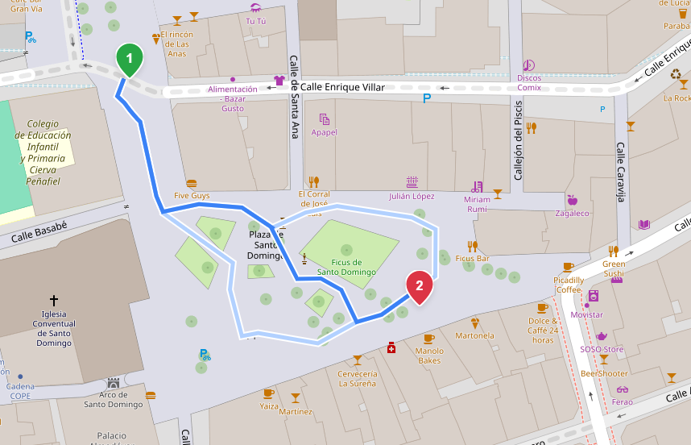

Pedestrian areas¶
Valhalla supports routing through pedestrian areas such as: squares, plazas and pedestrian zones mapped as polygons or multipolygons, instead of only routing around their perimeter. It does this by building a traversal skeleton along each area's medial axis and connecting it to the surrounding pedestrian network, so a route can cross a square the way a pedestrian actually would.
The feature is enabled with the mjolnir.pedestrian_areas config option and is off by default, so it has no effect on existing tile builds unless explicitly turned on.

The example above is Plaza de Santo Domingo in Murcia, Spain.
Enabling it¶
Set the option in your config, or pass it when generating one:
{
"mjolnir": {
"pedestrian_areas": true
}
}
The feature generates traversals for pedestrian ways, so it also depends on mjolnir.include_pedestrian. That option is enabled by default, so no extra configuration is normally needed, but if you have explicitly disabled it, pedestrian_areas will have no effect.
Tiles then need to be rebuilt for the change to take effect.
What counts as a pedestrian area¶
An area is picked up based on how its tags are parsed:
- a closed way with
highway=pedestrianandarea=yes - a relation with
type=multipolygonand carrying the same pedestrian tagging as the closed way, whose member ways form the outer boundary (and any inner rings)
Inner rings are treated as holes, so obstacles inside the area like a fountain, a building, or a monument are routed around if they are mapped as such.
How it works¶
Processing happens in two stages of Valhalla's tile builder, Mjolnir.
Recovering the geometry¶
Areas mapped as relations have member ways with no routable tags of their own, so the regular way parsing discards them. A dedicated pass in the stage kParseAreaWays recovers exactly the ways referenced by the collected area relations and marks them with the area bit, so their geometry survives to the builder without being turned into edges.
Building the traversal¶
For each area, the builder in the stage kBuildAreas:
- Assembles the polygon(s) from the member ways, including any holes.
- Densifies the boundary and computes a Voronoi diagram of the resulting points, keeping only the edges that fall inside the polygon. This approximates the medial axis, the skeleton running down the middle of the shape.
- Prunes the branches that reach out toward the corners.
- Connects each entrance (a perimeter node shared with a pedestrian way) to the nearest skeleton vertex it can reach in a straight line without leaving the area.
- Materialises the result as synthetic footways.
These synthetic ways carry ids above the highest real OSM way and node ids, so they never collide with real data, and are otherwise handled by the rest of the pipeline like any other footway.
Design decisions¶
A few decisions that keep the feature robust on the majority of areas:
- Small areas keep their perimeter. Areas below a size threshold are not worth a generated traversal, so their perimeter is made routable instead.
- Areas that are already routable are left alone. If a pedestrian way already runs through an area, no skeleton is generated on top of it.
- Nearby entrances are merged. Entrances that sit close together and can see each other through the area are grouped, so several footways arriving at the same corner don't each get their own connection.
Limitations¶
This is a first functional version covering the large majority of pedestrian areas. The following cases are known and documented as TODO's in the code:
-
Perimeter footways aren't detected as mapped paths. A pedestrian way that runs exactly along an area's boundary, or crosses it in a straight line with only two nodes, isn't recognised as one, since it has no node strictly inside the polygon, so a traversal may be generated over it.
-
Traversals generated from relations are unnamed. The name of an area mapped as a relation lives on the relation, not on its member ways. Since the name is currently taken from a member way, relation areas either inherit a member's name or end up unnamed.
-
Generated edges use generic attributes. Both traversal ways and re-emitted entrance nodes get a fixed set of pedestrian attributes rather than inheriting the area's own tags.
-
Only small areas get their perimeter back. When no traversal is generated, the perimeter is only restored for areas skipped for being too small. Areas skipped for other reasons, such as having no entrances, or having paths already mapped inside, are dropped entirely, even though some of them might still want a routable perimeter.
Future work¶
Each of the limitations above is a natural follow-up. This section outlines how each could be approached, as a starting point for future contributors.
-
Detecting perimeter footways. The current detection relies on finding a node strictly inside the polygon, which misses ways that only touch the boundary. Adding a geometric check on the segments between consecutive perimeter hits, testing whether they run along the boundary or cross the interior, would flag these ways without depending on an interior node.
-
Naming relation-based traversals. The relation name is available at parse time but isn't carried forward. Storing it alongside the area relation data, and reading it when the traversal is generated, would let areas mapped as relations take the square's name instead of a member way's.
-
Inheriting the area's attributes. Rather than building traversal ways and entrance nodes from scratch, the attributes could be looked up from the source area and the original nodes and merged. The attributes are already on the source ways at that point, so carrying them through is mostly a matter of routing them through to where the synthetic ways are created.
-
Restoring the perimeter more broadly. This one is more open and would need some investigation first: working out in which cases restoring the perimeter is actually desirable (small areas already do it, but areas skipped for other reasons, like having mapped paths inside, might benefit too), how to detect those cases, and then deciding per skipped area whether to give the perimeter back rather than only triggering on the size check.
-
Turn-by-turn instructions for crossings. Since crossings are ordinary footway edges, they produce a sequence of small maneuvers. Tagging the traversal edges with a dedicated flag, or grouping them in the maneuver generation step, would let the router emit a single "cross the square" instruction.
Beyond those, there are a few internal refinements marked in the source or raised during review:
-
Entrance distance tolerance. The tolerance for matching an entrance to its polygon is currently 0.1. This distance should ideally be zero, it would be worth investigating whether it can be tightened to an epsilon, or reworked so an exact value isn't needed at all.
-
RAII for GEOS pointers. The GEOS geometries are currently created and destroyed by hand. Wrapping them in a RAII type, as done elsewhere in the codebase, would make the cleanup automatic and safer.
-
Unifying the chain-walking logic. The walk used for pruning the branches and the one used for stitching chains are nearly identical, and could be unified.
-
Separating area ways into their own file. Area member ways are currently emitted into the same file as completely processed ways but in an intentionally incomplete state. Keeping them in a separate file would make the two clearly distinct and the pipeline easier to follow.
Performance¶
Generating traversals adds some processing time to the tile build. These are the numbers from a full-planet build (August 2026):
| Metric | Value |
|---|---|
| Pedestrian areas processed | 127,612 |
| Synthetic edges generated | 915,742 |
| Area parsing time | ~2 min |
| Area building time | ~9 min |
| Tile size impact | negligible |
The bottleneck is the Voronoi computation, and more specifically the densification step that feeds it. Selecting how densely the polygon boundary is sampled is what makes the biggest difference to build time.
Configuration reference¶
| Option | Type | Default | Description |
|---|---|---|---|
mjolnir.pedestrian_areas |
bool | false |
Generate routable traversals through pedestrian areas. Has no effect unless include_pedestrian is also enabled. |
mjolnir.include_pedestrian |
bool | true |
Whether pedestrian ways are included in the graph. Enabled by default and required for pedestrian_areas to take effect. |